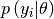

loglikelihood – Calculation of loglikelihood for common distributions¶
For use in Maximum Likelihood calculations, the loglikelihood of the data given the model is required. This module provides an interface to calculate this for different distributions, such as Poisson. The general syntax is function(data, model)(), which is the same order as the conditional probability .
Currently, only a function considering a Poisson distribution has been implemented, since this is what is required for spectroscopic/counting data.
Code documentation¶
Module author: Wouter Gins <wouter.gins@fys.kuleuven.be>
- satlas.loglikelihood.Gaussian(x, l)[source]¶
Returns the loglikelihood for a Gaussian distribution, assuming the variance is given by the square root of the data points. It is assumed that the parameters are true, and the loglikelihood that the data is drawn from the distribution established by the parameters is calculated.
Parameters: - x (array_like) – Data that has to be tested.
- l (array_like) – Parameter for the Poisson distrbution.
Returns: Array with the loglikelihoods for the data
Return type: array_like
- satlas.loglikelihood.Poisson(x, l)[source]¶
Returns the loglikelihood for a Poisson distribution. In this calculation, it is assumed that the parameters are true, and the loglikelihood that the data is drawn from the distribution established by the parameters is calculated.
Parameters: - x (array_like) – Data that has to be tested.
- l (array_like) – Parameter for the Poisson distribution.
Returns: Array with loglikelihoods for the data.
Return type: array_like